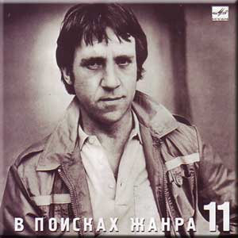

С сайта: http://www.kulichki.com/vv/pesni/
Всю войну под завязку
Всю войну под завязку я все к дому тянулся, И хотя горячился, воевал делово. Ну а он торопился, как-то раз не пригнулся,- И в войне взад-вперед обернулся, за два года - всего ничего! Не слыхать его пульса с сорок третьей весны, Ну а я окунулся в довоенные сны. И гляжу я, дурея, но дышу тяжело… Он был лучше, добрее, ну а мне повезло. Я за пазухой не жил, не пил с господом чая, Я ни в тыл не стремился, ни судьбе под подол, Но мне женщины молча намекали, встречая: Если б ты там навеки остался, может, мой бы обратно пришел. Для меня не загадка их печальный вопрос - Мне ведь тоже не сладко, что у них не сбылось. Мне ответ подвернулся: "Извините, что цел! Я случайно вернулся, вернулся, ну а ваш не сумел". Он кричал напоследок, в самолете сгорая: - Ты живи, ты дотянешь! - доносилось сквозь гул. Мы летали под богом, возле самого рая - Он поднялся чуть выше и сел там, ну а я до земли дотянул. Встретил летчика сухо райский аэродром. Он садился на брюхо, но не ползал на нем, Он уснул - не проснулся, он запел - не допел, Так что я вот вернулся, ну а он не сумел. Я кругом и навечно виноват перед теми, С кем сегодня встречаться я почел бы за честь. И хотя мы живыми до конца долетели, Жжет нас память и мучает совесть - у кого? У кого она есть. Кто-то скупо и четко отсчитал нам часы Нашей жизни короткой, как бетон полосы. И на ней - кто разбился, кто - взлетел навсегда… Ну а я приземлился, а я приземлился - вот какая беда.
— 1974-1975
Песня о Земле
Кто сказал: "Все сгорело дотла? Больше в Землю не бросите семя"? Кто сказал, что Земля умерла? Нет! Она затаилась на время. Материнство не взять у Земли, Не отнять, как не вычерпать моря. Кто поверил, что Землю сожгли? Нет! Она почернела от горя. Как разрезы, траншеи легли, И воронки, как раны, зияют, Обнаженные нервы Земли Неземное страдание знают. Она вынесет все, переждет. Не записывай Землю в калеки! Кто сказал, что Земля не поет, Что она замолчала навеки? Нет! Звенит она, стоны глуша, Изо всех своих ран, из отдушин. Ведь Земля - это наша душа, Сапогами не вытоптать душу! Кто поверил, что Землю сожгли? Нет, она затаилась на время.
— 1969
На дистанции четвёрка первачей
На дистанции - четверка первачей,- Каждый думает, что он-то побойчей, Каждый думает, что меньше всех устал, Каждый хочет на высокий пьедестал. Кто-то кровью холодней, кто горячей,- Все наслушались напутственных речей, Каждый съел примерно поровну харчей,- И судья не зафиксирует ничьей. А борьба на всем пути - В общем, равная почти. "Расскажите, как идут, бога ради, а?" "Телевиденье тут вместе с радио! Нет особых новостей - все ровнехонько, Но зато накал страстей - о-хо-хо какой!" Номер первый - рвет подметки как герой, Как под гору катит, хочет под горой. Он в победном ореоле и в пылу Твердой поступью приблизится к котлу. Почему высоких мыслей не имел?- Потому что в детстве мало каши ел, Голодал он в этом детстве, не дерзал,- Успевал переодеться - и в спортзал. Что ж, идеи нам близки - Первым лучшие куски, А вторым - чего уж тут, он все выверил - В утешение дадут кости с ливером. Номер два - далек от плотских тех утех,- Он из сытых, он из этих, он из тех,- Он надеется на славу, на успех - И уж ноги задирает выше всех. Ох, наклон на вираже - бетон у щек! Краше некуда уже, а он - еще! Он стратег, он даже тактик, словом - спец,- Сила, воля плюс характер - молодец! Четок, собран, напряжен И не лезет на рожон,- Этот - будет выступать на Салониках, И детишек поучать в кинохрониках, И соперничать с Пеле в закаленности, И являть пример целе- устремленности! Номер третий - убелен и умудрен,- Он всегда - второй надежный эшелон,- Вероятно, кто-то в первом заболел, Но, а может, его тренер пожалел. И назойливо в ушах звенит струна: У тебя последний шанс, слышь, старина! Он в азарте - как мальчишка, как шпана,- Нужен спурт - иначе крышка и хана! Переходит сразу он В задний старенький вагон, Где былые имена - прединфарктные, Где местам одна цена - все плацкартные. А четвертый - тот, что крайний, боковой,- Так бежит - ни для чего, ни для кого: То приблизится - мол, пятки оттопчу, То отстанет, постоит - мол, так хочу. Не проглотит первый лакомый кусок, Не надеть второму лавровый венок, Ну а третьему - ползти на запасные пути… Сколько все-таки систем в беге нынешнем! - Он вдруг взял да сбавил темп перед финишем, Майку сбросил - вот те на!- не противно ли? Поведенье бегуна - неспортивное! На дистанции - четверка первачей, Злых и добрых, бескорыстных и рвачей. Кто из них что исповедует, кто чей? …Отделяются лопатки от плечей - И летит уже четверка первачей!
— 1974
Кто-то высмотрел плод
Кто-то высмотрел плод, что неспел, неспел, Потрусили за ствол - он упал, упал… Вот вам песня о том, кто не спел, не спел, И что голос имел - не узнал, не узнал. Может, были с судьбой нелады, нелады, И со случаем плохи дела, дела, А тугая струна на лады, на лады С незаметным изъяном легла. Он начал робко - с ноты "до", Но не допел ее не до… Недозвучал его аккорд, аккорд И никого не вдохновил… Собака лаяла, а кот Мышей ловил… Смешно! Не правда ли, смешно! Смешно! А он шутил - недошутил, Недораспробовал вино И даже недопригубил. Он пока лишь затеивал спор, спор Неуверенно и не спеша, Словно капельки пота из пор, Из-под кожи сочилась душа. Только начал дуэль на ковре, Еле-еле, едва приступил. Лишь чуть-чуть осмотрелся в игре, И судья еще счет не открыл. Он хотел знать все от и до, Но не добрался он, не до… Ни до догадки, ни до дна, Не докопался до глубин, И ту, которая одна, Не долюбил, не долюбил! Смешно, не правда ли, смешно? А он спешил - недоспешил. Осталось недорешено, Все то, что он недорешил. Ни единою буквой не лгу - Он был чистого слога слуга, И писал ей стихи на снегу,- К сожалению, тают снега. Но тогда еще был снегопад И свобода писать на снегу. И большие снежинки и град Он губами хватал на бегу. Но к ней в серебряном ландо Он не добрался и не до… Не добежал, бегун-беглец, Не долетел, не доскакал, А звездный знак его - Телец - Холодный Млечный Путь лакал. Смешно, не правда ли, смешно, Когда секунд недостает,- Недостающее звено - И недолет, и недолет. Смешно, не правда ли? Ну, вот,- И вам смешно, и даже мне. Конь на скаку и птица влет,- По чьей вине, по чьей вине?
— 1973
Вот это да!
Вот это да, вот это да! Сквозь мрак и вечность-решето, Из зала Страшного суда Явилось то - не знаю что. Играйте туш! Быть может, он - Умерший муж Несчастных жен, Больных детей Больной отец, Благих вестей Шальной гонец. Вот это да, вот это да! Спустился к нам - не знаем кто,- Как снег на голову суда, Упал тайком, инкогнито! Но кто же он? Хитрец и лгун? Или - шпион, Или колдун? Каких дворцов Он господин, Каких отцов Заблудший сын? Вот это да, вот это да! И я спросил, как он рискнул,- Из ниоткуда в никуда Перешагнул, перешагнул? Он мне: "Внемли!" И я внимал, Что он с Земли Вчера сбежал, Решил: "Нырну Я в гладь и тишь!" Но в тишину Без денег - шиш! Мол, прошмыгну Как мышь, как вошь, Но в тишину Не прошмыгнешь! Вот это да, вот это да! Он повидал печальный край,- В аду - бардак и лабуда,- И он опять - в наш грешный рай. Итак, оттуда Он удрал, Его Иуда Обыграл - И в "тридцать три", И в "сто одно". Смотри, смотри! Он видел дно, Он видел ад, Но сделал он Свой шаг назад - И воскрешен! Вот это да, вот это да! Прошу любить, играйте марш! Мак-Кинли - маг, суперзвезда, Мессия наш, мессия наш! Владыка тьмы Его отверг, Но примем мы - Он человек! Душ не губил Сей славный муж, Самоубий- ство - просто чушь, Хоть это де- шево и враз - Не проведешь Его и нас! Вот это да, вот это да! Вскричал петух, и пробил час. Мак-Кинли - бог, суперзвезда,- Он - среди нас, он - среди нас! Он рассудил, Что Вечность - хлам, И запылил На свалку к нам. Он даже спьяну Не дурил, Марихуану Не курил, И мы хотим Отдать концы, Мы бегством мстим, Мы - беглецы! Вот это да! Вот это да!
— 1974
Мы все живём как будто, но…
Мы все живем как будто, но Не будоражат нас давно Ни паровозные свистки, Ни пароходные гудки. Иные - те, кому дано,- Стремятся вглубь - и видят дно,- Но - как навозные жуки И мелководные мальки… А рядом случаи летают, словно пули,- Шальные, запоздалые, слепые, на излете,- Одни под них подставиться рискнули - И сразу: кто - в могиле, кто - в почете. А мы - так не заметили И просто увернулись,- Нарочно по примете ли - На правую споткнулись. Средь суеты и кутерьмы - Ах, как давно мы не прямы! - То гнемся бить поклоны впрок, А то - завязывать шнурок… Стремимся вдаль проникнуть мы,- Но даже светлые умы Все размещают между строк - У них расчет на долгий срок… А рядом случаи летают, словно пули,- Шальные, запоздалые, слепые, на излете,- Одни под них подставиться рискнули - И сразу: кто - в могиле, кто - в почете. А мы - так не заметили И просто увернулись,- Нарочно по примете ли - На правую споткнулись. Стремимся мы подняться ввысь - Ведь думы наши поднялись,- И там царят они, легки, Свободны, вечны, высоки. И так нам захотелось ввысь, Что мы вчера перепились - И горьким дымам вопреки Мы ели сладкие куски… А рядом случаи летают, словно пули,- Шальные, запоздалые, слепые, на излете,- Одни под них подставиться рискнули - И сразу: кто - в могиле, кто - в почете. А мы - так не заметили И просто увернулись,- Нарочно по примете ли - На правую споткнулись. Открытым взломом, без ключа, Навзрыд об ужасах крича, Мы вскрыть хотим подвал чумной - Рискуя даже головой. И трезво, а не сгоряча Мы рубим прошлое с плеча,- Но бьем расслабленной ругой, Холодной, дряблой - никакой. А рядом случаи летают, словно пули,- Шальные, запоздалые, слепые, на излете,- Одни под них подставиться рискнули - И сразу: кто - в могиле, кто - в почете. А мы - так не заметили И просто увернулись,- Нарочно по примете ли - На правую споткнулись. Приятно сбросить гору с плеч - И все на божий суд извлечь, И руку выпростать, дрожа, И показать - в ней нет ножа,- Не опасаясь, что картечь И безоружных будет сечь. Но нас, железных, точит ржа - И психология ужа… А рядом случаи летают, словно пули,- Шальные, запоздалые, слепые, на излете,- Одни под них подставиться рискнули - И сразу: кто - в могиле, кто - в почете. А мы - так не заметили И просто увернулись,- Нарочно по примете ли - На правую споткнулись.
— 1973
Ой, где был я вчера
Ой, где был я вчера - не найду, хоть убей, Только помню, что стены с обоями. Помню, Клавка была и подруга при ней, Целовался на кухне с обоими. А наутро я встал, Мне давай сообщать: Что хозяйку ругал, Всех хотел застращать, Будто голым скакал, Будто песни орал, А отец, говорил, У меня генерал. А потом рвал рубаху и бил себя в грудь, Говорил, будто все меня продали, И гостям, говорят, не давал продохнуть - Все донимал их блатными аккордами. А потом кончил пить, Потому что устал, Начал об пол крушить Благородный хрусталь, Лил на стены вино, А кофейный сервиз, Растворивши окно, Взял да выбросил вниз. И никто мне не мог даже слова сказать, Но потом потихоньку оправились, Навалились гурьбой, стали руки вязать, И в конце уже все позабавились. Кто плевал мне в лицо, А кто водку лил в рот, А какой-то танцор Бил ногами в живот, Молодая вдова, Верность мужу храня, (Ведь живем однова) Пожалела меня. И бледнел я на кухне с разбитым лицом, Сделал вид, что пошел на попятную - "Развяжите!"- кричал,- "да и дело с концом!" - Развязали, но вилки попрятали. Тут вообще началось - Не опишешь в словах, И откуда взялось Столько силы в руках? Я, как раненный зверь, Напоследок чудил, Выбил окна и дверь, И балкон уронил. Ой, где был я вчера - не найду днем с огнем, Только помню, что стены с обоями… И осталось лицо, и побои на нем. Ну куда теперь выйти с побоями? Если правда оно, Ну, хотя бы на треть, Остается одно: Только лечь, помереть, Хорошо, что вдова Все смогла пережить, Пожалела меня И взяла к себе жить.
— 1967
Горное эхо
В тиши перевала, где скалы ветрам не помеха, На кручах таких, на какие никто не проник, Жило-поживало весёлое горное эхо, Оно отзывалось на крик - человеческий крик. Когда одиночество комом подкатит под горло И сдавленный стон еле слышно в обрыв упадет - Крик этот о помощи эхо подхватит проворно, Усилит - и бережно в руки своих донесёт. Должно быть, не люди, напившись дурмана и зелья, Чтоб не был услышан никем громкий топот и храп, Пришли умертвить, обеззвучить живое ущелье - И эхо связали, и в рот ему всунули кляп. Всю ночь продолжалась кровавая злая потеха, И эхо топтали, но звука никто не слыхал. К утру расстреляли притихшее горное эхо - И брызнули слезы, как камни, из раненых скал…
— 1973
Так случилось, мужчины ушли
Так случилось - мужчины ушли, Побросали посевы до срока. Вот их больше не видно из окон - Растворились в дорожной пыли. Вытекают из колоса зерна - Эти слезы несжатых полей. И холодные ветры проворно Потекли из щелей. Мы вас ждем - торопите коней! В добрый час, в добрый час, в добрый час! Пусть попутные ветры не бьют, а ласкают вам спины. А потом возвращайтесь скорей! Ивы плачут по вас, И без ваших улыбок бледнеют и сохнут рябины. Мы в высоких живем теремах, Входа нет никому в эти зданья - Одиночество и ожиданье Вместо вас поселилось в домах. Потеряла и свежесть и прелесть Белизна неодетых рубах, Даже старые песни приелись И навязли в зубах. Мы вас ждем - торопите коней! В добрый час, в добрый час, в добрый час! Пусть попутные ветры не бьют, а ласкают вам спины. А потом возвращайтесь скорей! Ивы плачут по вас, И без ваших улыбок бледнеют и сохнут рябины. Все единою болью болит, И звучит с каждым днем непрестанней Вековечный надрыв причитаний Отголоском старинных молитв. Мы вас встретим и пеших, и конных, Утомленных, нецелых, - любых. Только б не пустота похоронных И предчувствие их. Мы вас ждем - торопите коней! В добрый час, в добрый час, в добрый час! Пусть попутные ветры не бьют, а ласкают вам спины. А потом возвращайтесь скорей! Ивы плачут по вас, И без ваших улыбок бледнеют и сохнут рябины.
— 1971
Я не люблю
Я не люблю фатального исхода, От жизни никогда не устаю. Я не люблю любое время года, Когда веселых песен не пою. Я не люблю холодного цинизма, В восторженность не верю, и еще - Когда чужой мои читает письма, Заглядывая мне через плечо. Я не люблю, когда наполовину Или когда прервали разговор. Я не люблю, когда стреляют в спину, Я также против выстрелов в упор. Я ненавижу сплетни в виде версий, Червей сомненья, почестей иглу, Или - когда все время против шерсти, Или - когда железом по стеклу. Я не люблю уверенности сытой, Уж лучше пусть откажут тормоза! Досадно мне, что слово "честь" забыто, И что в чести наветы за глаза. Когда я вижу сломанные крылья - Нет жалости во мне и неспроста. Я не люблю насилье и бессилье, Вот только жаль распятого Христа. Я не люблю себя, когда я трушу, Обидно мне, когда невинных бьют, Я не люблю, когда мне лезут в душу, Тем более, когда в нее плюют. Я не люблю манежи и арены, На них мильон меняют по рублю, Пусть впереди большие перемены, Я это никогда не полюблю.
— 1969
Парус
А у дельфина взрезано брюхо винтом. Выстрела в спину не ожидает никто. На батарее нету снарядов уже. Надо быстрее на вираже. Парус! Порвали парус! Каюсь, каюсь, каюсь… Даже в дозоре можешь не встретить врага. Это не горе, если болит нога. Петли дверные многим скрипят, многим поют: - Кто вы такие? Вас здесь не ждут! Но парус! Порвали парус! Каюсь, каюсь, каюсь… Многие лета - тем, кто поет во сне. Все части света могут лежать на дне, Все континенты могут гореть в огне, Только все это не по мне. Но парус! Порвали парус! Каюсь, каюсь, каюсь…
— 1966